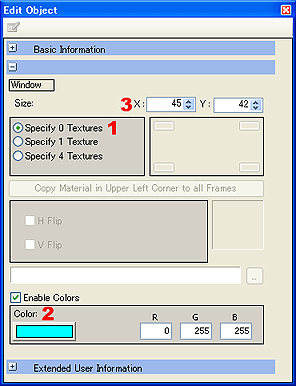
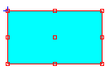
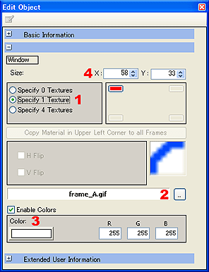
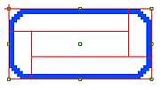
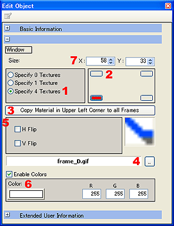
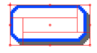

フレームオブジェクトを設定する
オブジェクト編集ウィンドウを開く
新規作成したフレームオブジェクトをダブルクリックして、オブジェクト編集ウィンドウを開きます。
フレームの画像を0枚指定にして、カラーとサイズを自由に設定できる四角形を作成できます。
| 
|
- 使用画像枚数の設定。
0枚指定ラジオボタンをチェックして、画像を指定しないフレームオブジェクトを作ります。
- フレーム内の色の設定。
フレーム内の「色を有効にする」チェックボックスにチェックを入れてフレーム内の色を設定します。
※チェックボックスにチェックを入れなければフレーム内は透明で表示されます。
- フレームオブジェクトのサイズ。
任意のサイズのフレームオブジェクトを作成できます。

|
左上に1枚画像を指定して、フレームオブジェクトを作成できます。
| 
|
- 使用画像枚数の設定。
１枚指定ラジオボタンをチェックして、左上に指定した画像を４つのコーナーに反転させて配置しフレームを作ります。
- 画像ファイルの指定。
ファイル選択ダイアログを表示し、画像ファイルを指定します。
- フレーム内の色の設定。
フレーム内の「色を有効にする」チェックボックスにチェックを入れてフレーム内の色を設定します。
※チェックボックスにチェックを入れなければフレーム内は透明で表示されます。
- フレームオブジェクトのサイズ。
任意のサイズのフレームオブジェクトを作成できます。

|
４枚指定で、４隅の画像を別々に指定できます。
影の付いているフレームなどを作る時に効果的です。
|  |
- 使用画像枚数の設定。
４枚指定ラジオボタンをチェックして、４隅の画像を個別に指定します。
- フレーム画像指定位置の選択。
４隅を個別に指定する時、指定位置を選択することができます。
- 左上隅マテリアル情報を全フレームにコピー。
左上隅の画像を４隅にコピーします。
- 画像ファイルの指定。
ファイル選択ダイアログを表示し、画像ファイルを指定します。
- 画像の向き設定。
選択された隅の画像の向きを設定できます。
- フレーム内の色の設定。
フレーム内の「色を有効にする」チェックボックスにチェックを入れてフレーム内の色を設定します。
※チェックボックスにチェックを入れなければフレーム内は透明で表示されます。
- フレームオブジェクトのサイズ。
任意のサイズのフレームオブジェクトを作成できます。

|